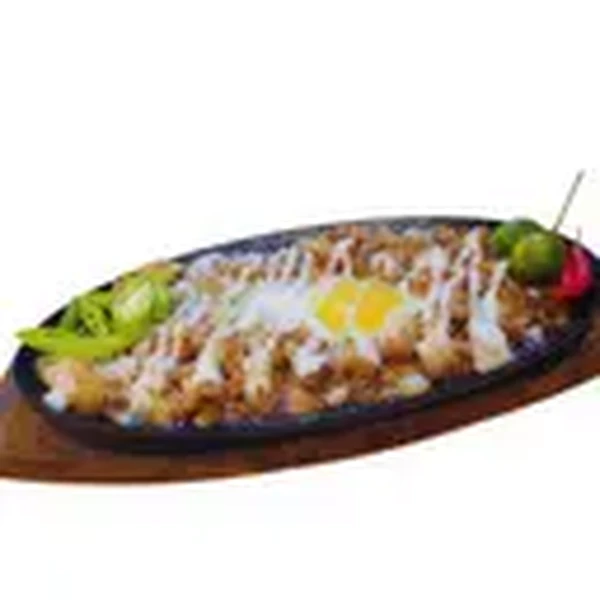
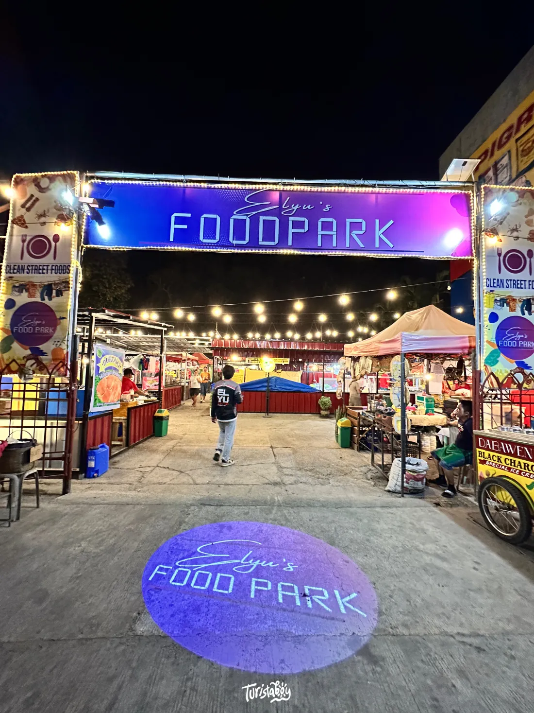
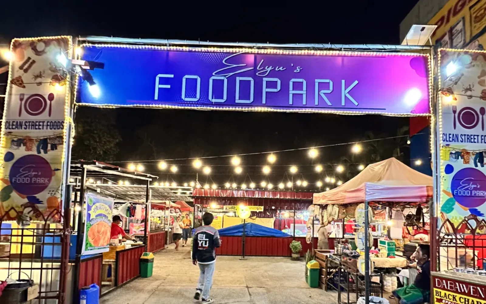
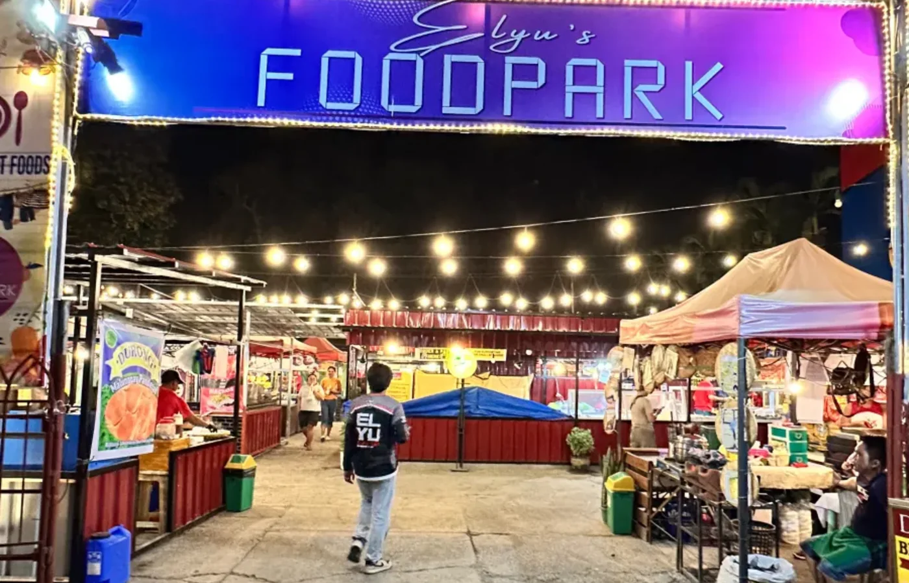
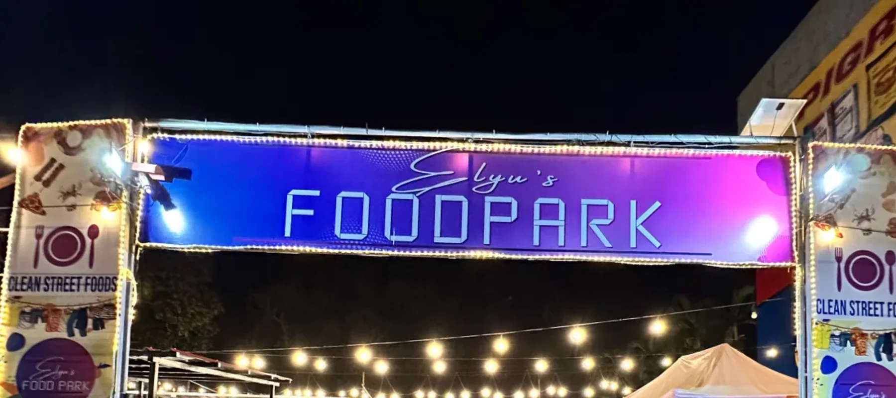

Pork sisig, made to share.
The plate that arrives loud, hot, and immediately makes everyone move their rice closer.
Public menu reference: from ₱200Confirm current price with the
stall.

Food, drinks, thrift finds, and an easy night out along MacArthur Highway in San Fernando.
Walk in without a fixed order. Start with something sizzling, split a second plate, get a cold drink, and take one more lap before going home.

Walk the whole park once before choosing. The first good smell does not have to be the last order.
One person gets sisig, someone handles drinks, and the undecided friend keeps looking.

Check the thrift finds, see what else is cooking, and discover the order you missed the first time.
The night ends better when nobody rushes the final conversation.

The entrance is hard to miss after sundown. Inside, food stalls and shared tables keep the night casual.